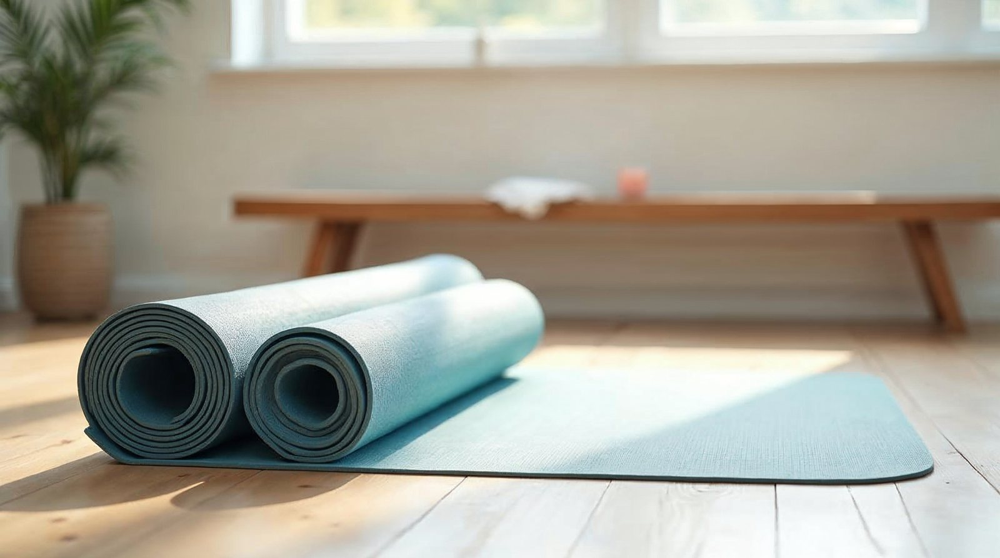
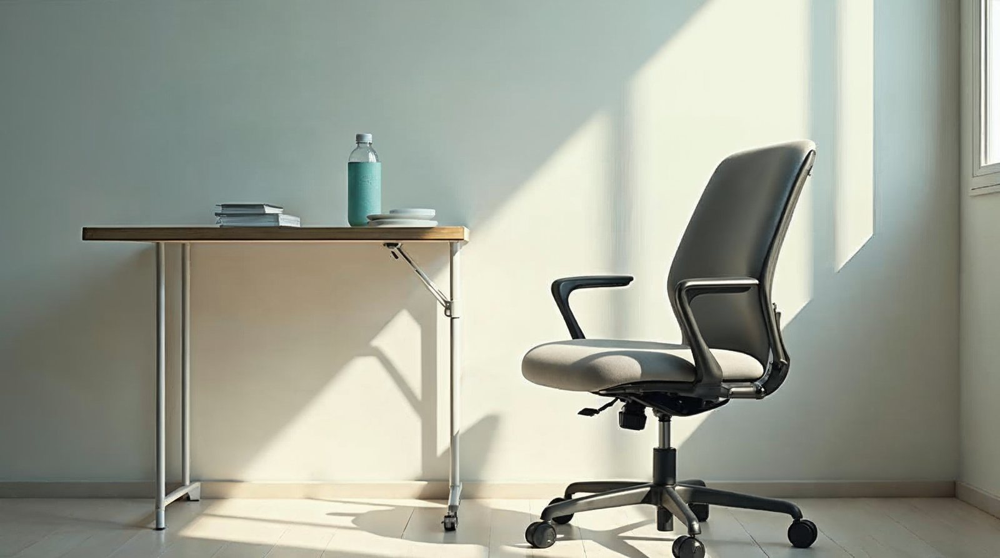
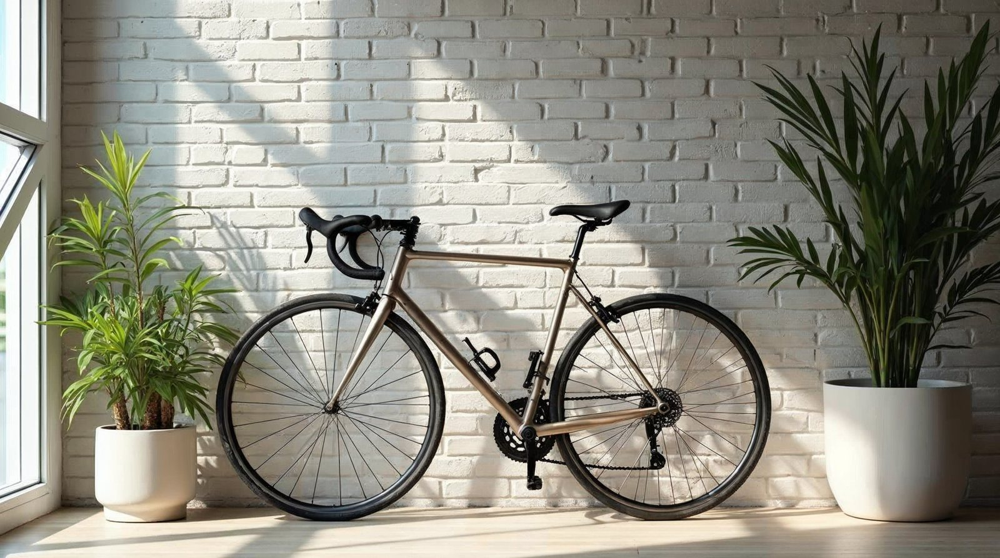
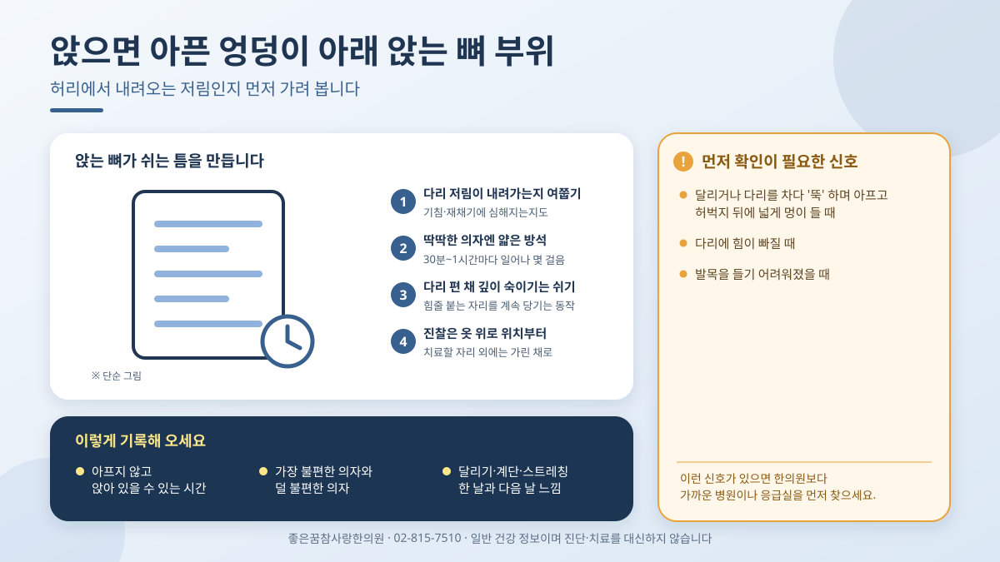

이종호 한의사 감수좋은꿈참사랑한의원 대표원장 (한의사 면허번호 19769)발행 2026-11-26 · 수정 2026-11-26
이 글의 차례
지하철 의자에 앉는 순간, 엉덩이 아래 깊은 곳이 '꾹' 눌리며 아픕니다. 사무실 의자에서도 한쪽 엉덩이를 들썩이며 자세를 자꾸 바꾸게 되고, 계단을 오를 때나 허리를 숙여 신발 끈을 맬 때도 같은 자리가 당깁니다. 허리가 문제인가 싶어 허리를 만져 보지만 허리는 멀쩡한 것 같습니다.
앉을 때 바닥에 닿는 엉덩이 아래 뼈를 흔히 '앉는 뼈'라고 부릅니다. 이 뼈에는 허벅지 뒤 근육(햄스트링)의 힘줄이 붙어 있는데, 이 힘줄이 지쳐 예민해지면 앉을 때 눌리고 다리를 앞으로 뻗거나 숙일 때 당기며 아픕니다. 의자에 앉는 일이 많은 분에게는 하루 종일 신경 쓰이는 통증입니다.
저는 이럴 때 먼저 허리에서 내려오는 통증은 아닌지, 다리로 저림이 퍼지지는 않는지를 가립니다. 체외충격파는 그렇게 확인한 뒤 몇 주, 몇 달씩 이어지는 힘줄 통증에 검토할 수 있는 방법 가운데 하나입니다.
진료실에서 이런 말씀을 자주 듣습니다. "허리 디스크 검사를 했는데 그건 아니래요. 그런데 앉으면 아파요." 또 "어디가 아프다고 설명하기가 좀 민망해서 미뤘어요" 하십니다. 설명하기 어려운 자리라 그동안 혼자 더 오래 참으셨을 것 같습니다.
앉는 일은 하루의 대부분을 차지합니다. 출퇴근길, 일하는 책상, 식탁, 운전석까지 앉을 때마다 아프다면 하루가 조금씩 지칩니다. 오늘은 이 앉는 뼈 통증을 어떻게 살피는지, 체외충격파는 어디까지 도울 수 있는지 차근차근 이야기해 보겠습니다.
왜 앉는 뼈 부위가 아플까요
허벅지 뒤 근육은 무릎을 굽히고 엉덩이를 뒤로 펴는 일을 합니다. 이 근육들의 힘줄이 엉덩이 아래 앉는 뼈에 모여 붙습니다. 걷고, 뛰고, 계단을 오르고, 허리를 숙일 때마다 이 자리가 당겨집니다.
이 자리는 두 가지 부담을 한꺼번에 받습니다. 하나는 근육이 당기는 힘이고, 다른 하나는 앉을 때 몸무게가 위에서 누르는 힘입니다. 그래서 달리기나 언덕 오르기를 갑자기 늘린 분, 그리고 반대로 하루 대부분을 딱딱한 의자에 앉아 지내는 분 모두에게 생길 수 있습니다.
다리를 쭉 편 채 허리를 깊이 숙이는 스트레칭을 무리하게 반복하는 것도 힘줄이 붙는 자리를 계속 당겨 예민하게 만들 수 있다고 알려져 있습니다. 유연해지려고 한 스트레칭이 오히려 그 자리를 괴롭히는 경우가 있는 셈입니다.
힘줄은 혈액이 적게 가는 조직이라 회복이 느립니다. 앉을 때마다 눌리고 걸을 때마다 당겨지니 제대로 쉴 틈이 없습니다. 그래서 한번 예민해지면 몇 주, 몇 달씩 이어지기 쉽습니다.
허리 디스크, 좌골신경통과는 어떻게 다를까요
허리에서 신경이 눌려 생기는 통증은 엉덩이에서 허벅지 뒤, 종아리, 발까지 저림이나 찌릿함이 길게 내려가는 경우가 많습니다. 기침이나 재채기에 다리 통증이 심해지기도 합니다. 앉는 뼈 힘줄 통증은 대개 엉덩이 아래 한 자리가 깊게 아프고, 앉거나 다리를 뻗을 때 그 자리가 또렷해집니다.
엉덩이 깊은 근육 사이에서 신경이 눌리는 경우도 비슷하게 느껴질 수 있습니다. 앉는 뼈 위의 물주머니에 염증이 생기는 경우도 있습니다. 이런 것들은 한 가지 동작으로 가르기 어려워, 여러 동작을 해 보고 필요하면 허리 영상 검사 결과도 함께 봅니다.
달리거나 발을 높이 차다가 허벅지 뒤에서 '뚝' 하는 느낌과 함께 갑자기 아프고, 며칠 뒤 허벅지 뒤에 넓게 멍이 들었다면 힘줄이나 근육이 찢어졌을 수 있습니다.

체외충격파는 이 자리에서 어떻게 쓰나요
체외충격파는 피부를 절개하지 않고 몸 밖에서 짧은 압력파를 아픈 힘줄 주변에 전달하는 방법입니다. 허벅지 뒤 힘줄이 붙는 자리의 오래된 통증도 체외충격파가 연구되어 온 부위 가운데 하나로, 예민해진 힘줄에 자극을 주어 몸이 그 자리를 다시 돌보도록 돕는 쪽으로 설명됩니다.
다만 이 자리는 엉덩이 근육 아래 깊이 있어, 장비를 대는 자세와 방향이 중요합니다. 반응도 사람마다 달라 미리 말씀드리기 어렵습니다. 막 아프기 시작했다면 먼저 앉는 자세와 스트레칭 습관을 조절하며 지켜보는 쪽이 맞을 수 있습니다.
체외충격파가 대신하기 어려운 것도 있습니다. 찢어진 힘줄을 이어 주지 못하고, 허리에서 내려오는 신경 통증은 다른 방향으로 살펴야 합니다. 앉는 시간과 자세가 그대로라면 같은 자리가 다시 눌려 예민해질 수 있습니다.
받을 때는 깊은 곳이 두드려지는 느낌, 시큰함, 평소 아프던 자리가 더 또렷해지는 느낌이 들 수 있습니다. 세게 할수록 좋은 것이 아니라, 견딜 수 있는 범위 안에서 반응을 보며 맞춥니다. 불편하면 바로 말씀해 주세요.
몇 번, 어떤 간격으로 할지는 진찰 뒤 함께 정합니다. 보통은 간격을 두고 받으며 그사이 앉아 있을 때 어땠는지를 듣고 다음 강도와 자리를 정합니다. 받은 뒤 하루 이틀 뻐근함이 남을 수 있어 그 변화도 함께 여쭙습니다.
받기 전에 미리 알려 주세요
- 혈액을 묽게 하는 약(항응고제·항혈소판제)을 드시는 경우
- 임신 중이거나 임신 가능성이 있는 경우
- 고관절이나 골반에 인공관절, 금속 고정물이 있거나, 심장박동기 같은 전자 의료기기가 있는 경우
- 치료할 자리에 상처, 종기, 피부염이 있거나 종양이 있는 경우
- 최근 같은 자리에 스테로이드 주사를 맞은 경우
치핵이나 항문 주변 질환으로 치료 중이시라면 그것도 알려 주세요. 위치가 가까워 장비를 대는 방향을 신중하게 정합니다. 해당하는지 헷갈리셔도 괜찮습니다. 드시는 약은 처방한 의사와 상의 없이 줄이거나 끊지 않습니다.

먼저 이렇게 여쭙니다
- 언제부터 아팠고, 그 무렵 달리기나 언덕 오르기, 스트레칭을 늘리셨나요?
- 딱딱한 의자, 푹신한 의자, 운전석 가운데 어디서 가장 아픈가요?
- 계단 오르기, 허리 숙이기, 다리 뻗기 가운데 어떤 동작이 불편한가요?
- 엉덩이 아래에서 종아리나 발까지 저림이 내려가나요?
- 기침이나 재채기에 다리 통증이 심해지나요?
- 허리 검사를 받은 적이 있다면 어떤 설명을 들으셨나요?
처음부터 다 기억하지 못하셔도 괜찮습니다. 생각나는 것부터 말씀해 주시면 나머지는 제가 하나씩 여쭙겠습니다.
체외충격파를 받는 날은 이렇게 흘러갑니다
먼저 맥을 짚으며 지난번 이후 앉아 있을 때 어땠는지, 가장 오래 앉은 날은 언제였는지를 듣습니다. 그다음 다리 들기, 엎드려 무릎 굽히기처럼 지난번과 같은 동작으로 다시 확인합니다.
허리춤을 조금 내리기 쉬운 편한 바지를 입고 오시면 좋습니다. 엎드리거나 옆으로 누운 자세에서 무릎을 살짝 당겨 힘줄이 붙는 자리가 드러나게 합니다. 치료할 자리 외에는 가린 채로 진행하고, 가장 예민한 지점을 짚어 확인합니다. 자세가 불편하거나 부담스러우시면 그 자리에서 말씀해 주세요. 베개 위치와 다리 각도를 바꿔 가며 편한 자세를 같이 찾습니다.
장비는 원장이 직접 대고 낮은 강도로 시작합니다. 받는 중에 여러 번 괜찮은지 여쭙고 그 답에 따라 각도와 강도를 바꿉니다. 받은 자리와 강도, 받은 뒤 느낌은 기록해 두었다가 다음 진료에서 비교합니다.
일상에서 먼저 해 볼 수 있는 것
- 딱딱한 의자에는 얇은 방석을 깔고, 아픈 쪽 엉덩이 아래가 눌리지 않게 무게를 살짝 옮기기
- 30분~1시간마다 일어나 몇 걸음 걷기
- 다리를 쭉 편 채 허리를 깊이 숙이는 스트레칭은 잠시 쉬기
- 언덕 달리기, 빠른 계단 오르기, 다리를 크게 차는 운동은 잠시 줄이기
가운데가 뚫린 도넛 모양 방석이나 앞쪽이 살짝 낮은 방석을 쓰면 앉는 뼈가 덜 눌린다는 분도 있습니다. 여러 가지를 써 보고 덜 불편한 것을 고르시면 됩니다.
아예 안 움직이는 것보다 아프지 않은 범위에서 걷는 것은 이어 가시길 권합니다. 엉덩이 근육과 허벅지 뒤 근육이 버티는 힘을 천천히 되찾는 운동은 진찰 뒤 통증 정도를 보고 함께 정합니다.
체외충격파를 받은 날은 오래 앉아 있기, 달리기, 무리한 스트레칭은 쉬시길 권합니다. 받은 자리가 평소와 다르게 붓거나 멍이 오래가면 전화로 알려 주세요.
이런 생활에서 자주 이야기됩니다
예를 들어 시험 준비로 하루 열 시간 넘게 독서실 의자에 앉아 있는 수험생이라면 의자 높이와 방석, 일어나는 간격부터 함께 봅니다. 공부 시간을 줄이기는 어려우니, 같은 시간을 앉아 있더라도 엉덩이 아래가 덜 눌리는 방법을 찾습니다.
달리기를 즐기는 분은 언덕 훈련이나 속도 훈련을 늘린 시기를 여쭙고, 장거리 운전을 자주 하는 분은 운전석 각도와 쉬는 간격을 여쭙니다. 요가나 필라테스에서 앞으로 깊이 숙이는 동작을 많이 하신다면 그 동작의 깊이도 함께 이야기합니다.
어느 경우든 생활을 통째로 바꾸자는 이야기는 아닙니다. 지금 하시는 일과 운동을 이어 가면서, 앉는 뼈가 쉬는 틈을 조금씩 만들어 주는 쪽을 함께 찾습니다.

얼마나 지켜보고, 언제 상담할까요
막 생긴 가벼운 통증이라면 앉는 자세와 운동을 조절하며 1~2주 지켜볼 수 있습니다. 앉아 있을 때의 불편이 조금씩 줄어드는지 살펴보세요.
2~3주가 지나도 앉을 때마다 같은 자리가 아프거나, 오래 앉아 있지 못해 일과 공부에 지장이 생긴다면 진찰을 받아 보시길 권합니다. 자리가 민망해서 미루셨다면 더 미루지 않으셨으면 합니다. 진찰은 옷 위로 위치를 짚는 것부터 천천히 시작합니다.
한의원에서 함께 살필 수 있는 경우
- 앉을 때 엉덩이 아래 앉는 뼈 부위 통증이 몇 주에서 몇 달째 이어지는 경우
- 계단을 오르거나 허리를 숙일 때 허벅지 뒤 위쪽이 당기는 경우
- 허리 검사에서 큰 문제는 없다고 들었는데 엉덩이 아래 통증이 남는 경우
- 오래 앉는 생활로 허리와 골반, 허벅지 뒤가 함께 굳어 있는 경우
좋은꿈참사랑한의원에서는 맥부터 짚으며 말씀을 듣고 몸 상태를 먼저 본 뒤, 허리와 골반, 허벅지 뒤를 함께 움직여 통증이 어디서 오는지 가립니다. 필요하다고 판단될 때 초음파로 힘줄을 확인하고, 체외충격파가 맞는다고 판단되면 원내 장비(제우스·한일티엠) 가운데 부위에 맞는 것을 골라 원장이 직접 진행합니다.
엉덩이와 허벅지 근육이 굳어 있으면 침이나 약침을 이어서 쓰기도 하고, 골반의 균형이 함께 관련되어 보이면 추나를 함께 살핍니다. 체외충격파를 할지, 몇 번 어떤 간격으로 할지, 비용은 어떤지는 진찰 뒤 이유와 함께 안내해 드립니다. 미리 궁금하시면 방문 전 전화로 확인해 주세요.
이렇게 기록해 오시면 상담이 쉬워집니다
- 아프지 않고 앉아 있을 수 있는 시간(분)
- 가장 불편한 의자와 덜 불편한 의자
- 달리기, 계단, 스트레칭을 한 날과 그다음 날의 느낌
- 체외충격파를 받은 뒤 하루, 사흘째의 느낌
'몇 분 앉아 있으면 아파지는지' 하나만 꾸준히 적어 오셔도 흐름을 읽기가 쉬워집니다. 기억나는 만큼만 적어 오셔도 충분합니다.
설명하기 어려운 자리라 더 오래 혼자 참으셨을 겁니다. 그 시간이 길었던 만큼, 앉아 있는 하루가 조금 덜 고단해지도록 같이 방법을 찾아보겠습니다. 다음에 오시면 아프지 않고 몇 분 앉아 계실 수 있었는지부터 여쭙겠습니다.
이런 증상은 먼저 확인이 필요합니다
- 달리거나 다리를 차다가 '뚝' 하는 느낌과 함께 아프고 허벅지 뒤에 넓게 멍이 든 경우
- 다리에 힘이 빠지거나 발목을 들기 어려워진 경우, 대소변 보기가 어렵거나 엉덩이 주변 감각이 둔해진 경우
이런 신호가 있으면 한의원보다 가까운 병원이나 응급실을 먼저 찾으세요.
함께 읽으면 좋은 글
- 요가를 하다가 허벅지 뒤와 엉덩이가 당기는 것은 어떻게 살피나요?
- 옆으로 누우면 엉덩이 바깥쪽이 아플 때 체외충격파 상담은 어떻게 하나요?
- 체외충격파를 받기 전에 먼저 확인이 필요한 경우는 어떤 때인가요?
- 체외충격파 장비가 여러 종류면 어떻게 골라서 쓰나요?

여쭙는 것
- 언제부터 아팠고, 그 무렵 달리기나 언덕 오르기, 스트레칭을 늘리셨나요?
- 딱딱한 의자, 푹신한 의자, 운전석 가운데 어디서 가장 아픈가요?
- 계단 오르기, 허리 숙이기, 다리 뻗기 가운데 어떤 동작이 불편한가요?
생활에서 해 볼 것
- 딱딱한 의자에는 얇은 방석을 깔고, 아픈 쪽 엉덩이 아래가 눌리지 않게 무게를 살짝…
- 30분~1시간마다 일어나 몇 걸음 걷기
- 다리를 쭉 편 채 허리를 깊이 숙이는 스트레칭은 잠시 쉬기
한의원에서 함께 살필 것
- 앉을 때 엉덩이 아래 앉는 뼈 부위 통증이 몇 주에서 몇 달째 이어지는 경우
- 계단을 오르거나 허리를 숙일 때 허벅지 뒤 위쪽이 당기는 경우
- 허리 검사에서 큰 문제는 없다고 들었는데 엉덩이 아래 통증이 남는 경우
먼저 확인이 필요한 신호
- 달리거나 다리를 차다가 '뚝' 하는 느낌과 함께 아프고 허벅지 뒤에 넓게 멍이 든 경우
- 다리에 힘이 빠지거나 발목을 들기 어려워진 경우, 대소변 보기가 어렵거나 엉덩이 주…
한눈에 보는 표
| 구분 | 핵심 |
|---|---|
| 여쭙는 것 | 언제부터 아팠고, 그 무렵 달리기나 언덕 오르기, 스트레칭을 늘리셨나요? 딱딱한 의자, 푹신한 의자, 운전석 가운데 어디서 가장 아픈가요? |
| 생활에서 해 볼 것 | 딱딱한 의자에는 얇은 방석을 깔고, 아픈 쪽 엉덩이 아래가 눌리지 않게 무게를 살짝 옮기기 30분~1시간마다 일어나 몇 걸음 걷기 |
| 한의원에서 함께 살필 것 | 앉을 때 엉덩이 아래 앉는 뼈 부위 통증이 몇 주에서 몇 달째 이어지는 경우 계단을 오르거나 허리를 숙일 때 허벅지 뒤 위쪽이 당기는 경우 |
| 먼저 확인이 필요한 신호 | 달리거나 다리를 차다가 '뚝' 하는 느낌과 함께 아프고 허벅지 뒤에 넓게 멍이 든 경우 다리에 힘이 빠지거나 발목을 들기 어려워진 경우, 대소변 보기가 어렵거나 엉덩이 주변 감각이 둔해진 경우 |
자주 묻는 질문
앉을 때 엉덩이가 아프면 허리 디스크인가요?
그럴 수도 있지만, 허벅지 뒤 힘줄이 붙는 자리가 예민해진 경우도 있습니다. 다리로 저림이 내려가는지, 어떤 동작에서 아픈지를 함께 보고 구분합니다.
스트레칭을 열심히 하면 도움이 되나요?
다리를 쭉 편 채 깊이 숙이는 스트레칭은 오히려 그 자리를 당길 수 있어 잠시 쉬시길 권합니다. 어떤 움직임을 할지는 진찰 뒤 함께 정합니다.
민감한 자리라 진찰이 부담스러워요.
옷 위로 위치를 먼저 짚고, 치료할 자리 외에는 가린 채로 진행합니다. 불편하신 점은 언제든 말씀해 주세요.
체외충격파를 받으면 바로 오래 앉아 있어도 되나요?
받은 날은 오래 앉아 있기를 줄이고 틈틈이 일어나 걸으시길 권합니다.
방석은 어떤 것이 좋을까요?
앉는 뼈가 덜 눌리는 가운데가 뚫린 방석이나 앞이 살짝 낮은 방석을 쓰는 분이 있습니다. 직접 앉아 보고 덜 불편한 것을 고르시면 됩니다.
좋은꿈참사랑한의원은 재진 때 지난번 이야기부터 이어서 여쭙니다. 진료시간과 예약은 오시는 길에서 확인하세요.
어디서 상담받을 수 있나요?
좋은꿈참사랑한의원은 서울 동작구 만양로2길 2 신성빌딩 3층·5층(서울 동작구 상도동, 7호선 상도역 3번 출구 근처)에 있습니다. 한의사 3명(이종호 대표원장, 조영기 수석진료원장, 정원영 진료원장)이 진료합니다. 진료시간은 평일 09:30~20:00(점심 13:00~14:00), 토·일·공휴일 09:30~15:00이며, 방문 전 전화로 확인을 권합니다. 예약은 네이버 예약, 카카오톡 상담, 전화 02-815-7510로 받습니다.
이 글은 일반적인 건강 정보이며 개인의 진단이나 치료를 대신하지 않습니다. 증상이 있거나 복용 중인 약이 있다면 진료를 통해 확인하세요. 치료 효과는 개인마다 다를 수 있습니다.
작성 기준: 일반적으로 알려져 있는 건강 정보를 참고해 정리했습니다(대표원장 감수). 증상 기록은 1~2주 동안 하루 1회, 비슷한 시간에 적어 오시면 지난 상태와 비교하기 쉽습니다.